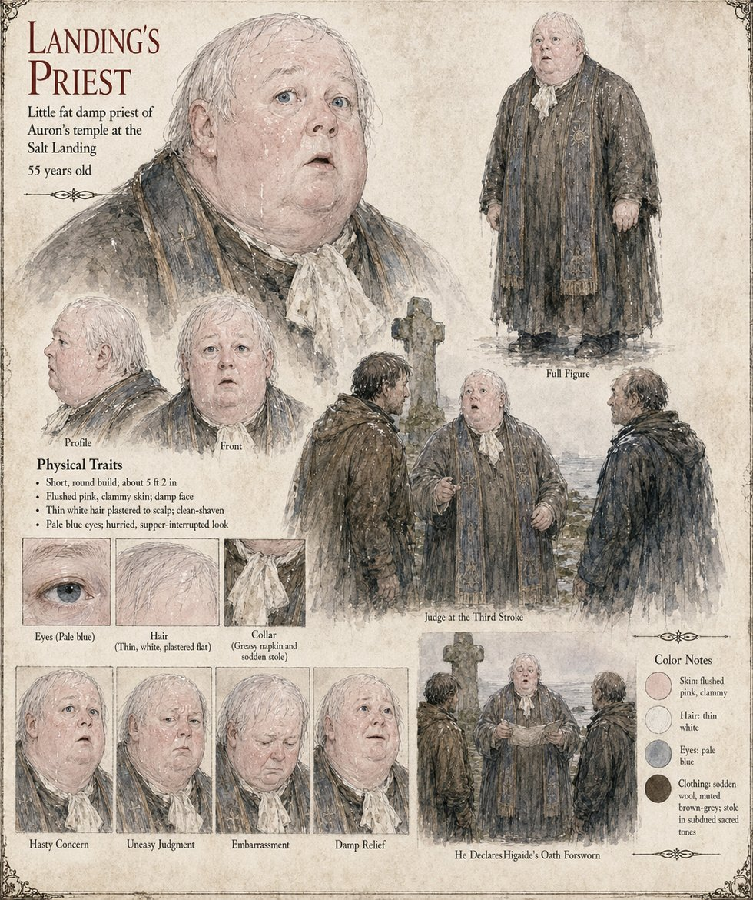

Landing's Priest
Priest of Auron's temple at the Salt Landing · judge at the Third Stroke · 55 years old
The priest of Auron's temple at the Salt Landing, the river-mouth hamlet of thirty huts and a hundred salt-pans where Sunnhild keeps the pans and Hagen Brandt puts his mark to the Duke's contract. Auron the Father governs heaven, law, kingship, judgment and oaths in the Threefold Crown. The sheet draws a short, round man of fifty-five, about 5 ft 2 in, with flushed pink, clammy skin, a damp face, thin white hair plastered to the scalp, a clean-shaven chin and pale blue eyes, a greasy napkin still tucked at his collar over a sodden stole, and a hurried, supper-interrupted look.
Its two scenes are captioned Judge at the Third Stroke and He Declares Higaide's Oath Forsworn: he stands between two men at a weathered stone cross by the sea and then reads from a sheet of paper, the two men flanking him. The publication notes set him as judge for the wayside Third Stroke in Chapter 8, with his stole and two witnesses, and have him declare Higaide's oath forsworn. It is the stroke at which Theodard of Lorrenne breaks Higaide's sword Yoake, and the verdict is the one Rothari's page has the Hierarch declare void, once the Law of the Oath-Blade is repealed, against the stranger of Case 2231: He was merely early. The sheet does not say which oath is judged.
His expression panels run Hasty Concern, Uneasy Judgment, Embarrassment and Damp Relief. Written from the sheet, from what the other Case 4181 pages already say, and from the character notes in the case's publication-prep file; the manuscript itself was not to hand. His age of 55, short round build, flushed pink skin, thin white hair, pale blue eyes and sodden brown-grey wool with a stole in subdued sacred tones are the sheet's own.
Appears In

Related Subjects


Related Records

In a wet inn yard at night Theodard of Lorrenne crosses his plain straight blade with Higaide's long curved sword Yoake, and Yoake breaks a hand's breadth above the hilt; the Landing's Priest raises a hand to judge, and the knight's face shows no triumph.